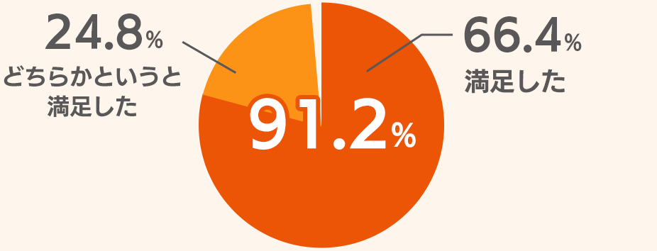

安心の事故対応｜au損保
- au損保TOP
- 自転車保険 Bycle Best
- 安心！便利！au損保の事故対応
 安心！便利！au損保の事故対応
安心！便利！au損保の事故対応 
万一事故が起こってしまった時に！安心の3つのポイント
-
POINT 1
WEBでも電話でも24時間365日
事故のご連絡、保険金のご請求が可能です。 -
POINT 2
親身な事故対応！
事故の受付から保険金お支払手続きまで、お客さまからの問い合わせやご相談の全てを専任担当者が親切・丁寧にお答えします。
POINT 3
お客さま満足度 91.2％
Q. 当社の事故対応はいかがでしたか？

- ■平成28年7月から9月までの3か月間、支払完了に至ったお客さまを対象にアンケートを実施。
アンケート回答件数274件
お客さまから感謝の声を頂いております
保険金支払いの対象となるケガの考え方や手続きなどを、分かりやすく丁寧に教えて頂いたので、円滑かつ安心して保険金請求を行うことができました。
担当の方が、事故を起こして動揺している娘を落ち着かせ、手続きの説明をしてくれました。相手方との交渉もきちんとして頂いたので安心しました。
初めて交通事故に遭いケガをして気が動転していたのですが、親身になって相談に乗ってくださり、様々な手続きをして頂きました。1人では事故対応は出来なかったと思います。
小さなケガだったので保険金請求をためらいましたが、快く対応して頂いてありがたく思いました。
- au損保TOP
- 自転車保険 Bycle Best
- 安心！便利！au損保の事故対応
B16D310461[1612]